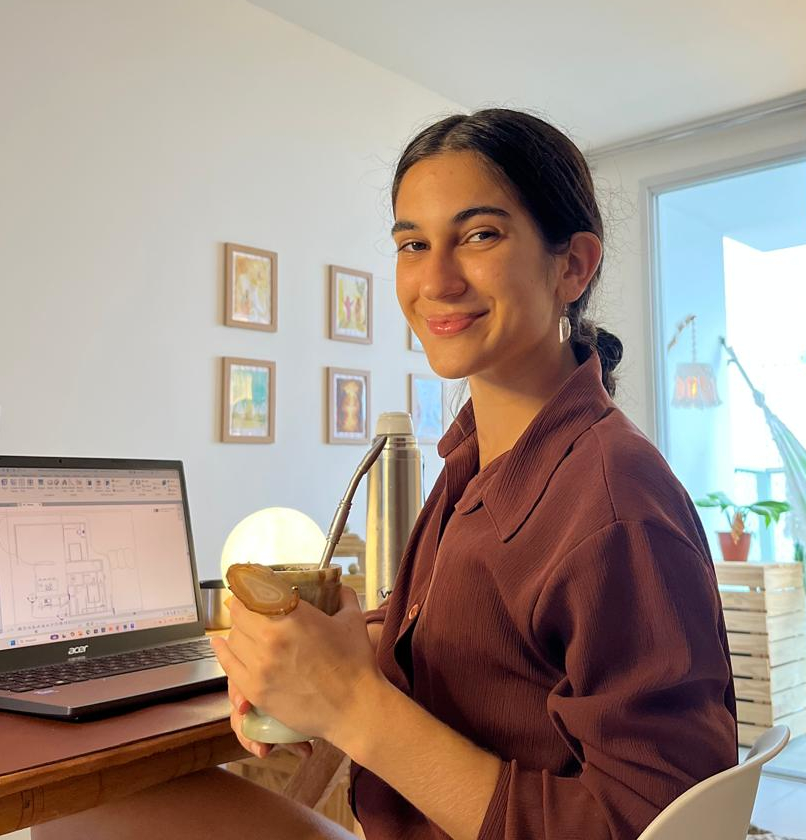
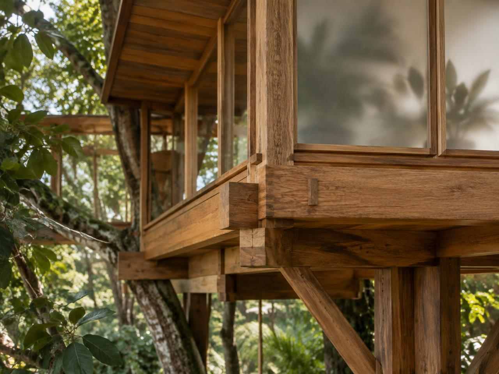

Sonho
Escuta atenta, repertório e desejos ganham direção.

Projetos autorais e bioclimáticos que aproximam pessoas, paisagem e matéria.
Conheça a essência
Luisa Dalcin é projetista e idealizadora da Casa na Árvore: da arte ao projeto, entre o desenho à mão, o detalhamento técnico e a vontade de ver uma ideia se tornar espaço.
Conheça a projetista
A Casa na Árvore nasce do imaginário de criar um lugar entre a natureza e a imaginação — e cresce com a ideia de transformar sonhos em espaços reais, pensados para cada história e cada forma de viver.
Da imaginação à arquitetura.
Escuta atenta, repertório e desejos ganham direção.
Arquitetura autoral e soluções bioclimáticas tomam forma.
Decisões técnicas equilibram custo, qualidade e bem-estar.
Materiais e sistemas são acompanhados com cuidado.
A casa passa a guardar novas memórias.
Encontre a Casa na Árvore no Google Maps e trace sua rota até nós.
Abrir no Google Maps